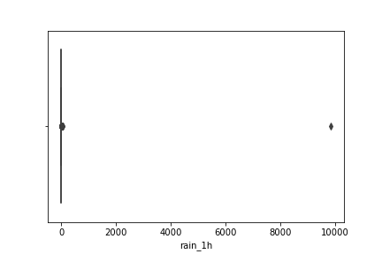
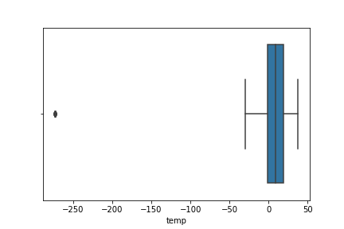
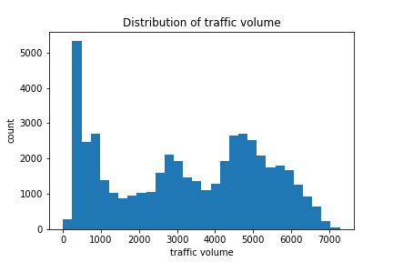
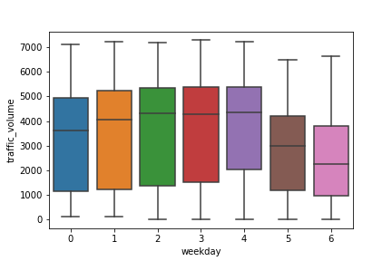
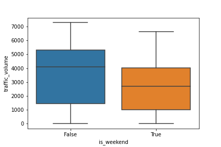
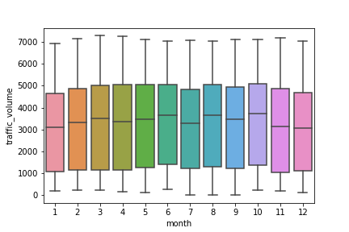
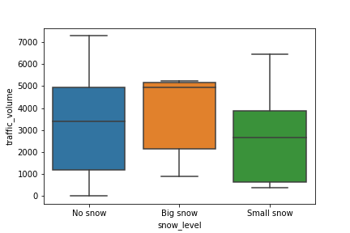
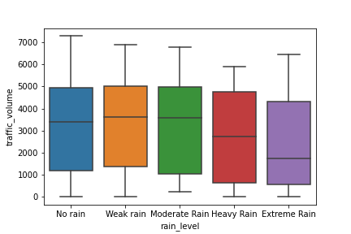

Metro Interstate Traffic Volume Report
Contents
Metro Interstate Traffic Volume Report¶
Introduction¶
Metro interstate traffic volume is the hourly traffic volume of metropolitan interstate. For this specific dataset, we are studying the hourly Minneapolis-St Paul, MN traffic volume for westbound I-94 from 2012-10-02 to 2018-9-30. We explore th traffic data for Minneapolis-St Paul and try to explore relationships between temperature, weather conditions, date and time information on Mineeapolis interstate traffic and predict traffic volume given these weather conditions. We therefore build a linear model that examines how the above variables are correlated to traffic volume.
Data Information¶
Abstract: Hourly Minneapolis-St Paul, MN traffic volume for westbound I-94. Includes weather and holiday features from 2012-2018.
holiday Categorical US National holidays plus regional holiday, Minnesota State Fair
temp Numeric Average temp in kelvin
rain_1h Numeric Amount in mm of rain that occurred in the hour
snow_1h Numeric Amount in mm of snow that occurred in the hour
clouds_all Numeric Percentage of cloud cover
weather_main Categorical Short textual description of the current weather
weather_description Categorical Longer textual description of the current weather
date_time DateTime Hour of the data collected in local CST time
traffic_volume Numeric Hourly I-94 ATR 301 reported westbound traffic volume
Data Preprocessing¶
Before doing EDA or further data anlysis, it is important to explore and perform data cleaning to check for any irregularities in the dataset and to see if any additional columns are needed. Our original data contains 9 columns and 48,204 rows. Specifically, the explanatory variables are holiday, temperature, amount of rain per hour, amount of snow per hour, coverage of clounds, type of weather, description of weather, and date time. The last column is the response variable traffic_volume.
Upon observing the original data frame, we think it is helpful to extract new columns froms the date_time variable to better aid the analysis process. Thus, the date, month, and hour variables are created because these might be important factors that correlates to the traffic volume change.
Weekday vs weekend affects traffic volume because each day of week may have different patterns. Therefore, categorical variable weekday is added to our dataset, another variable is_weekend is added with weekdays encoded as False and weekends encoded as True.
We observe that there is one outlier for the rain_1h which has a value of over 8000. We drop the irregular observation because it is clearly a mistake. On the other hand, for most observations, the amount of rain is 0 since there is no rain for most of the times. To better train our data, we transform the numerical variable of rain_1h to catagorical variables rain_level describing the level of rain.

Similary, snow_1h is divided into 3 categories as the new column snow_level, with no snow, small snow, and big snow.
The temperature variable in the original data uses the unit of kelvin. To better interpret the variable, we transform the unit to celsius. There are also outliers for the temperature which is also clearly mistakes, so we remove them.

For the holiday variable, there are many of them in the original dataset, which includes christmas, new year’s day, etc, but only holiday vs non-holiday should be useful. Therefore, this column is transformed into True or False.
Explanatory Data Analysis¶
Before building any models, we need to perform data visualizations to see how the variables relate to each other. We first visualize the distribution of the response variable traffic_volume to check for distribution. As shown in figure, the distributions are not normal, with many spikes.

Then, we perform exploratory data analysis for the explanatory variables to visualize high-level data characteristics. We use box plots because they are useful to see the correlation between each subgroup of categorical to the traffic volume.
We observe that there is significant less traffic volume over weekends (5 = Saturday and 6 = Sunday).

Thus, we compare the difference in traffic volume for only weekday vs weekend. Weekday shows significant more traffic volume than weekend. This makes sense because people commute a lot more during weekdays to go to work.

There are no apparent difference in traffic volume across months.

Box plots for snow_level and rain_level are also examined. For snow, people’s tend to travel more during big snow days, which is not very reasonable in this case.

For rain levels, it is reasonable that people might choose to walk so traffic volume is not the greatest. However, as rain level starts to increase, traffic volume gradually decreases since people are not willing to travel in rainy days.

Research Question¶
Does different environmental variables (such as snow, rain, cloud, temperature, holiday, and weekend) impacts the level of traffic overall?
Analysis and Interpretation of the Model¶
According to our Fit OLS Regression Model that we have built based on our variables, we tried to find a correlation between the level of Traffic and different variables that may influence the level of traffic. According to the summary of our model, we were able to find that there is overall positive correlation between the level of traffic and different environmental variables (snow, cloud, rain, temperature, holiday, weekend) in combined. For some of the unexpected discoveries we had, the most unexpected finding wasthe statistic significance on the snow level. Initially, we assumed that high level of snow would decrease the amount of traffic, but the result we discovered was very different from our expectation. The p-value for this factor came out to be 0.684, which was higher than 0.05. This also signifies that the snow does not have strong correlation on traffic level. For other coefficients on our variables, they were reasonably expected at the beginning of our hypothesis test as we expected that higher rain and snow would decrease the level of traffic. We expected a negative correlation because due to the danger of driving under restraint atmospheric conditions from snow and rain (which could hinder vision and increase chance of accident by less surface friction on the road), we expected less people to drive on those days. Similarly, we expected negative correlation between the traffic level and other variables, such as weekend and holiday, as less people would be driving to commute to work or they would more likely to stay at home. Other surprising foundings we had were correlation between cloud level/Temperature and traffic level as the coefficients were positive, but exceptionally smaller compared to other variables that had positive coefficients. This demonstrates that there are some possitive correlation between these factors, but weaker correlation compared to holiday, rain, snow, and weekend variables.
Conclusion¶
Given the interpretation between overall environmental factors and the traffic level, we are confident to say there are overall positive correlation between the combined environmental factors on the level of traffic overall, which can be found from the positive constant coefficient. There were some unexpected discoveries made on the relationship between the level of traffic and snowiness of the weather, we found strongest correlation between the holiday variable and our target variable (Level of Traffic). Overall, the p-values for most of our variables were statistically significant, except the level of snow, ultimately supporting our hypothesis.